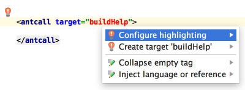

Refer to a non-existing target tag in your Ant build file, and IntelliJ IDEA will suggest you to automatically create the corresponding tag. This intention action will not even make you change your current editing location.
